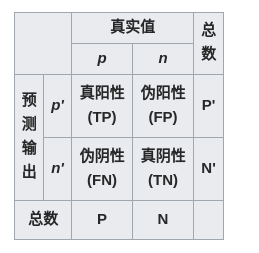

ROC曲线
接收者操作特征曲线 （receiver operating characteristic curve），简称ROC曲线是一种坐标图式的分析工具，用于：
-
选择最佳的信号侦测模型、舍弃次佳的模型
-
在同一模型中设定最佳阈值
ROC分析的是二元分类模型（如阳性/阳性，有病/没病）：

ROC空间
ROC空间将伪阳性率（FPR）定义为 X 轴，真阳性率（TPR）定义为 Y 轴。
TPR：在所有实际为阳性的样本中，被正确地判断为阳性之比率。
FPR：在所有实际为阴性的样本中，被错误地判断为阳性之比率。